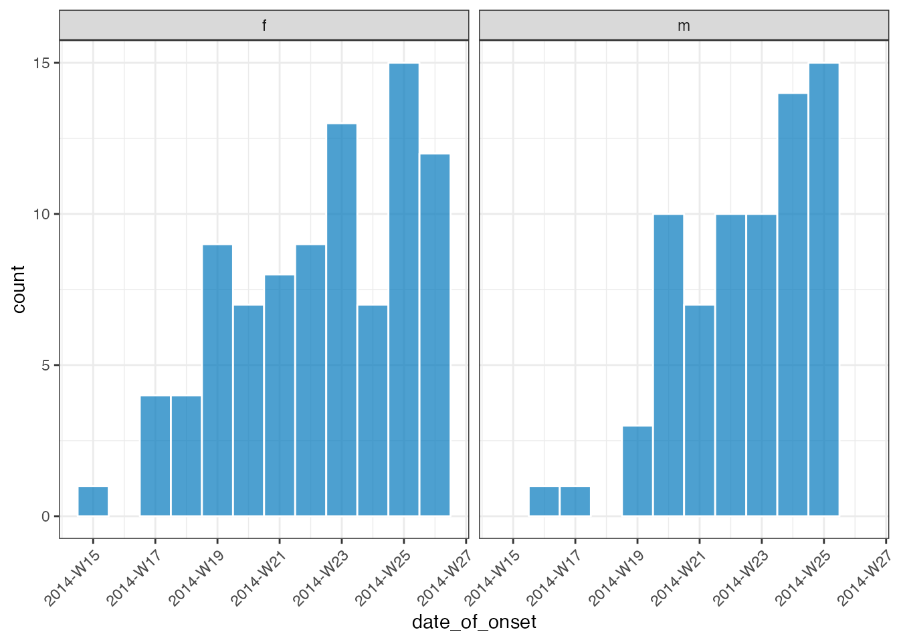
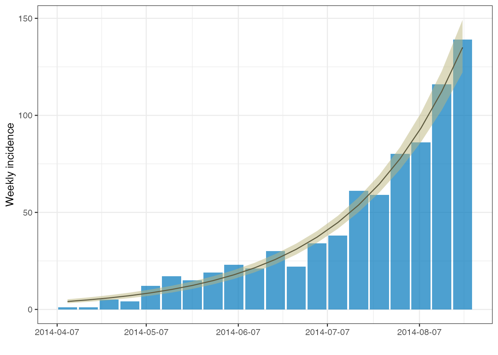
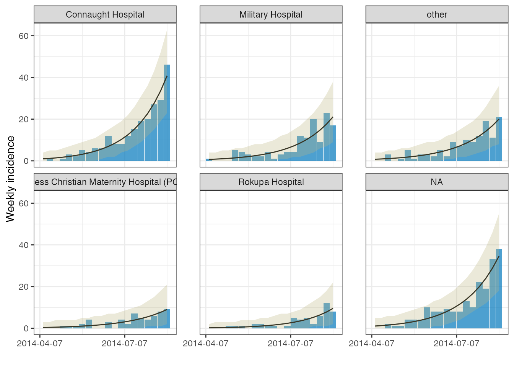
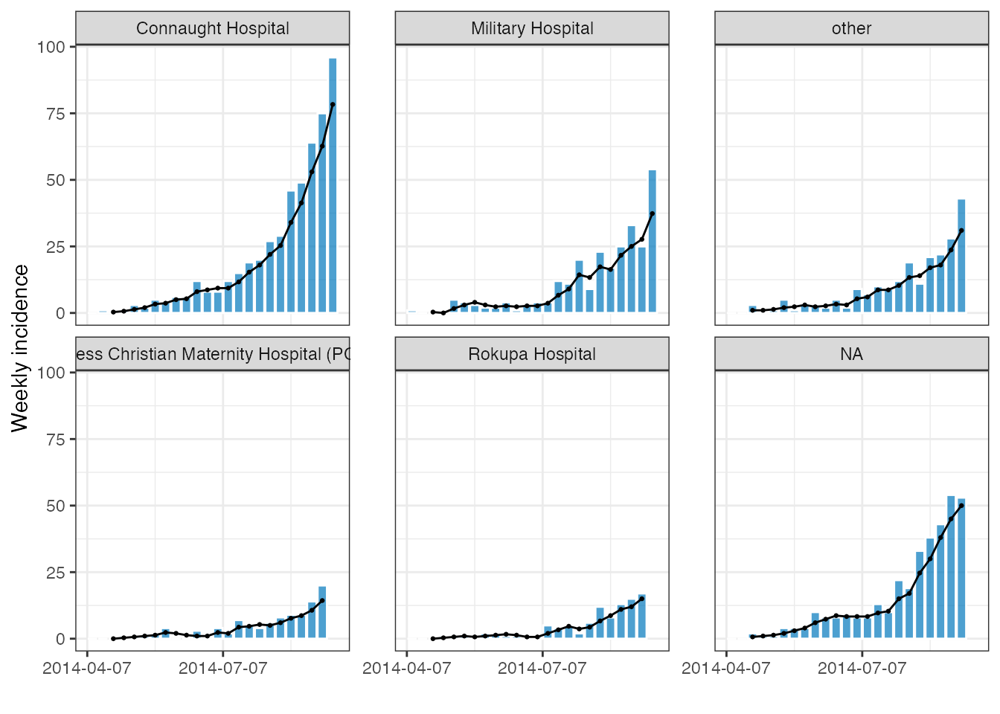

To illustrate the trend fitting functionality of i2extras we will use the simulated Ebola Virus Disease (EVD) outbreak data from the outbreaks package.
For this example we will restrict ourselves to the first 20 weeks of data:
dat <- incidence(
raw_dat,
date_index = date_of_onset,
interval = 7
)[1:20, ]
dat
#> An incidence2 object: 20 x 2
#> [783 cases from days 2014-04-07 to 2014-08-18]
#> [interval: 7 days]
#> [cumulative: FALSE]
#>
#> bin_date count
#> <date> <int>
#> 1 2014-04-07 1
#> 2 2014-04-14 1
#> 3 2014-04-21 5
#> 4 2014-04-28 4
#> 5 2014-05-05 12
#> 6 2014-05-12 17
#> 7 2014-05-19 15
#> 8 2014-05-26 19
#> 9 2014-06-02 23
#> 10 2014-06-09 21
#> 11 2014-06-16 30
#> 12 2014-06-23 22
#> 13 2014-06-30 34
#> 14 2014-07-07 38
#> 15 2014-07-14 61
#> 16 2014-07-21 59
#> 17 2014-07-28 80
#> 18 2014-08-04 86
#> 19 2014-08-11 116
#> 20 2014-08-18 139
plot(dat)
We can use fit_curve() to fit the data with either a poisson or negative binomial regression model. The output from this will be a nested object with class incidence2_fit which has methods available for both automatic plotting and the calculation of growth (decay) rates and doubling (halving) times.
out <- fit_curve(dat, model = "poisson", alpha = 0.05)
out
#> # A tibble: 1 x 2
#> model estimates
#> <list> <list>
#> 1 <glm> <df[,7] [20 × 7]>
out %>% plot()
out %>% growth_rate()
#> # A tibble: 1 x 8
#> model r r_lower r_upper growth_or_decay time time_lower time_upper
#> <list> <dbl> <dbl> <dbl> <chr> <dbl> <dbl> <dbl>
#> 1 <glm> 0.0263 0.0240 0.0286 doubling 26.4 24.2 28.9To unnest the data we can use unnest() (a function that has been reexported from the tidyr package.
out %>% unnest(estimates)
#> # A tibble: 20 x 8
#> model count bin_date estimate lower_ci upper_ci lower_pi upper_pi
#> <list> <int> <date> <dbl> <dbl> <dbl> <dbl> <dbl>
#> 1 <glm> 1 2014-04-07 4.09 3.20 5.23 0 10
#> 2 <glm> 1 2014-04-14 4.92 3.91 6.19 1 11
#> 3 <glm> 5 2014-04-21 5.92 4.77 7.33 1 13
#> 4 <glm> 4 2014-04-28 7.11 5.82 8.68 2 15
#> 5 <glm> 12 2014-05-05 8.55 7.11 10.3 2 17
#> 6 <glm> 17 2014-05-12 10.3 8.67 12.2 3 19
#> 7 <glm> 15 2014-05-19 12.3 10.6 14.4 5 22
#> 8 <glm> 19 2014-05-26 14.8 12.9 17.1 6 26
#> 9 <glm> 23 2014-06-02 17.8 15.7 20.3 8 30
#> 10 <glm> 21 2014-06-09 21.4 19.1 24.0 11 34
#> 11 <glm> 30 2014-06-16 25.8 23.3 28.5 14 39
#> 12 <glm> 22 2014-06-23 31.0 28.3 33.9 18 46
#> 13 <glm> 34 2014-06-30 37.2 34.3 40.4 23 53
#> 14 <glm> 38 2014-07-07 44.8 41.5 48.2 29 62
#> 15 <glm> 61 2014-07-14 53.8 50.1 57.7 37 73
#> 16 <glm> 59 2014-07-21 64.7 60.3 69.4 46 86
#> 17 <glm> 80 2014-07-28 77.7 72.2 83.7 56 102
#> 18 <glm> 86 2014-08-04 93.4 86.2 101. 69 121
#> 19 <glm> 116 2014-08-11 112. 103. 123. 83 145
#> 20 <glm> 139 2014-08-18 135. 122. 149. 101 174fit_curve() also works nicely with grouped incidence2 objects. In this situation, we return a nested tibble with some additional columns that indicate whether there has been a warning or error during the fitting or prediction stages.
grouped_dat <- incidence(
raw_dat,
date_index = date_of_onset,
interval = 7,
groups = hospital
)[1:120, ]
grouped_dat
#> An incidence2 object: 120 x 3
#> [783 cases from days 2014-04-07 to 2014-08-18]
#> [interval: 7 days]
#> [cumulative: FALSE]
#>
#> bin_date hospital count
#> <date> <fct> <int>
#> 1 2014-04-07 Military Hospital 1
#> 2 2014-04-07 Connaught Hospital 0
#> 3 2014-04-07 other 0
#> 4 2014-04-07 <NA> 0
#> 5 2014-04-07 Princess Christian Maternity Hospital (PCMH) 0
#> 6 2014-04-07 Rokupa Hospital 0
#> 7 2014-04-14 Military Hospital 0
#> 8 2014-04-14 Connaught Hospital 1
#> 9 2014-04-14 other 0
#> 10 2014-04-14 <NA> 0
#> # … with 110 more rows
out <- fit_curve(grouped_dat, model = "poisson", alpha = 0.05)
out
#> # A tibble: 6 x 7
#> hospital model estimates fitting_warning fitting_error prediction_warn…
#> <fct> <lis> <list> <list> <list> <list>
#> 1 Connaug… <glm> <df[,7] … <NULL> <NULL> <NULL>
#> 2 Militar… <glm> <df[,7] … <NULL> <NULL> <NULL>
#> 3 other <glm> <df[,7] … <NULL> <NULL> <NULL>
#> 4 Princes… <glm> <df[,7] … <NULL> <NULL> <NULL>
#> 5 Rokupa … <glm> <df[,7] … <NULL> <NULL> <NULL>
#> 6 <NA> <glm> <df[,7] … <NULL> <NULL> <NULL>
#> # … with 1 more variable: prediction_error <list>
# plot with a prediction interval but not a confidence interval
out %>% plot(ci = FALSE, pi=TRUE)
out %>% growth_rate()
#> Note: incidence2_fit class dropped in returned object
#> # A tibble: 6 x 9
#> hospital model r r_lower r_upper growth_or_decay time time_lower
#> <fct> <lis> <dbl> <dbl> <dbl> <chr> <dbl> <dbl>
#> 1 Connaug… <glm> 0.0281 0.0238 0.0327 doubling 24.6 21.2
#> 2 Militar… <glm> 0.0256 0.0201 0.0315 doubling 27.0 22.0
#> 3 other <glm> 0.0245 0.0190 0.0303 doubling 28.3 22.8
#> 4 Princes… <glm> 0.0237 0.0159 0.0323 doubling 29.2 21.5
#> 5 Rokupa … <glm> 0.0283 0.0195 0.0382 doubling 24.5 18.1
#> 6 <NA> <glm> 0.0261 0.0217 0.0307 doubling 26.6 22.6
#> # … with 1 more variable: time_upper <dbl>We provide helper functions, is_ok(), is_warning() and is_error() to help filter the output as necessary.
out <- fit_curve(grouped_dat, model = "negbin", alpha = 0.05)
out %>% is_warning()
#> Note: incidence2_fit class dropped in returned object
#> # A tibble: 5 x 5
#> hospital model estimates fitting_warning prediction_warn…
#> <fct> <list> <list> <list> <list>
#> 1 Connaught Hospital <negbi… <df[,7] [20… <chr [2]> <NULL>
#> 2 other <negbi… <df[,7] [20… <chr [2]> <NULL>
#> 3 Princess Christian Mate… <negbi… <df[,7] [20… <chr [2]> <NULL>
#> 4 Rokupa Hospital <negbi… <df[,7] [20… <chr [2]> <NULL>
#> 5 <NA> <negbi… <df[,7] [20… <chr [2]> <NULL>
out %>% is_warning() %>% unnest(fitting_warning)
#> Note: incidence2_fit class dropped in returned object
#> # A tibble: 10 x 5
#> hospital model estimates fitting_warning prediction_warn…
#> <fct> <list> <list> <chr> <list>
#> 1 Connaught Hospital <negbi… <df[,7] [20… iteration limit … <NULL>
#> 2 Connaught Hospital <negbi… <df[,7] [20… iteration limit … <NULL>
#> 3 other <negbi… <df[,7] [20… iteration limit … <NULL>
#> 4 other <negbi… <df[,7] [20… iteration limit … <NULL>
#> 5 Princess Christian M… <negbi… <df[,7] [20… iteration limit … <NULL>
#> 6 Princess Christian M… <negbi… <df[,7] [20… iteration limit … <NULL>
#> 7 Rokupa Hospital <negbi… <df[,7] [20… iteration limit … <NULL>
#> 8 Rokupa Hospital <negbi… <df[,7] [20… iteration limit … <NULL>
#> 9 <NA> <negbi… <df[,7] [20… iteration limit … <NULL>
#> 10 <NA> <negbi… <df[,7] [20… iteration limit … <NULL>We can add a rolling average, across current and previous intervals, to an incidence2 object with the add_rolling_average() function:
ra <-
grouped_dat %>%
add_rolling_average(before = 2) # group observations with the 2 prior
ra
#> # A tibble: 6 x 2
#> hospital rolling_average
#> <fct> <list>
#> 1 Connaught Hospital <tibble [20 × 3]>
#> 2 Military Hospital <tibble [20 × 3]>
#> 3 other <tibble [20 × 3]>
#> 4 Princess Christian Maternity Hospital (PCMH) <tibble [20 × 3]>
#> 5 Rokupa Hospital <tibble [20 × 3]>
#> 6 <NA> <tibble [20 × 3]>
ra %>% unnest(rolling_average)
#> # A tibble: 120 x 4
#> hospital bin_date count rolling_average
#> <fct> <date> <int> <dbl>
#> 1 Connaught Hospital 2014-04-07 0 NA
#> 2 Connaught Hospital 2014-04-14 1 NA
#> 3 Connaught Hospital 2014-04-21 0 0.333
#> 4 Connaught Hospital 2014-04-28 1 0.667
#> 5 Connaught Hospital 2014-05-05 3 1.33
#> 6 Connaught Hospital 2014-05-12 2 2.00
#> 7 Connaught Hospital 2014-05-19 5 3.33
#> 8 Connaught Hospital 2014-05-26 4 3.67
#> 9 Connaught Hospital 2014-06-02 6 5
#> 10 Connaught Hospital 2014-06-09 6 5.33
#> # … with 110 more rows
plot(ra, color = "white")
#> Warning: Removed 12 rows containing missing values (position_stack).
#> Warning: Removed 12 rows containing missing values (position_stack).